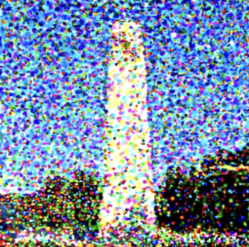
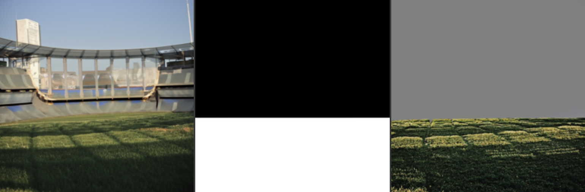
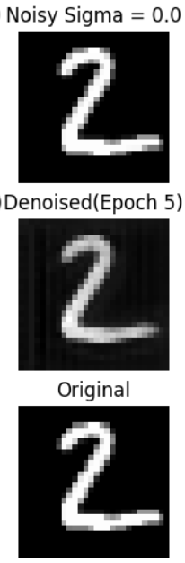
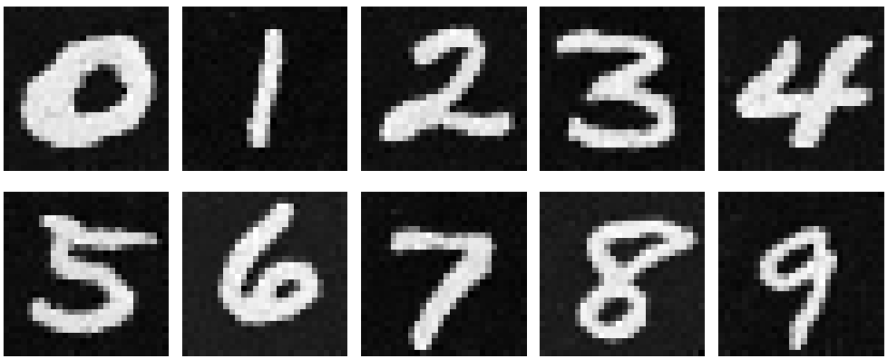

CS 180: Computer Vision and Computational Photography
Project Overview
In this project, I explore the power of diffusion models in generating high-quality images. In Part A, I generate images using a pretrained diffusion model called DeepFloyd. In Part B, I train a diffusion model on PyTorch's MNIST dataset.
The Random Seed used for generating the images in Part A is 180.
Note: All Images in Part A are upsampled versions of the original images created using DeepFloyd II.
Part 0: Sampling from a Pretrained Diffusion Model
Here are the images sampled from the pretrained diffusion model at varying number of inference steps (0, 20, 50).
Sampling at 0 Inference Steps
Sampling at 20 Inference Steps
Sampling at 50 Inference Steps
Trend: As the number of inference steps increases (at least in the values I tried: 5, 20, 50), the images start looking more realistic and better align with the prompt.
Part 1.1: Implementing the Forward Process of a Diffusion Model
Here, I implemented the forward process of a diffusion model. The forward process is the process of adding noise to the image. The forward process is defined by the following equation:
\[ q(x_t | x_{t-1}) = \mathcal{N}(x_t; \sqrt{\alpha_t}x_{t-1}, (1 - \alpha_t)I) \]
Below is the Campanile image through the forward process at different timesteps (0, 250, 500, 750). Note, these are upsampled versions of the original images using DeepFloyd II.
Campanile through the forward process at timestep 0, 250, 500, 750
Part 1.2: Classical Denoising
In classical denoising, we naively try to denoise an image by using a Gaussian blurring kernel. Here are the original images and the classical denoised images.
Campanile through the classical denoising process
From above, Campanile through the forward process at timestep 0, 250, 500, 750
Part 1.3: One-Step Denoising
We use the Stage 1 UNet of the DeepFloyd model to denoise the image using the prompt "a high quality photo of a [object]" where the object is the noisy image. We visualize the original image, the noisy image, and the estimate of the original image.
Original Image, Noisy Image, and One-Step Denoised Image at t = 250
Original Image, Noisy Image, and One-Step Denoised Image at t = 500
Original Image, Noisy Image, and One-Step Denoised Image at t = 750
Part 1.4: Iterative Denoising
In iterative denoising, we iteratively apply the Stage 1 UNet of the DeepFloyd model to denoise the image. We visualize the original image, the noisy image, and the estimate of the original image at each timestep. We incrementally denoise the image by denoising the noisy image with the UNet and then taking this image as the new noisy image. This leads to better results than one-step denoising.
Noisy Image at timestep 690Noisy Image at timestep 540Noisy Image at timestep 390
Noisy Image at timestep 240Noisy Image at timestep 90Iterative Denoised Image Result
Now we use the iterative denoising method to sample from the diffusion model. Instead of denoising a noisy image, we generate images from scratch. We start with a random noise image and iteratively denoise it using the Stage 1 UNet of the DeepFloyd model. The quality of the images are not spectacular and this is fixed later using Classifier-Free Guidance.
Sample 1Sample 2Sample 3
Sample 4Sample 5
Part 1.6: Classifier-Free Guidance
You may have noticed that some of the generated images in the prior section are not very good. In order to greatly improve image quality (at the expense of image diversity), we can use a technique called Classifier-Free Guidance. In CFG, we compute both a noise estimate conditioned on a text prompt, and an unconditional noise estimate. We denote these \( \epsilon_c \) and \( \epsilon_u \). Then, we let our new noise estimate be
\[
\epsilon = \epsilon_u + \gamma (\epsilon_c - \epsilon_u)
\]
where \( \gamma \) controls the strength of CFG. Notice that for \( \gamma = 0 \), we get an unconditional noise estimate, and for \( \gamma = 1 \) we get the conditional noise estimate. The magic happens when \( \gamma > 1 \). For the following samples, I used \( \gamma = 7 \).
Sample 1 with Classifier Free GuidanceSample 2 with Classifier Free GuidanceSample 3 with Classifier Free Guidance
Sample 4 with Classifier Free GuidanceSample 5 with Classifier Free Guidance
Part 1.7: Image Translation
In part 1.4, we take a real image, add noise to it, and then denoise. This effectively allows us to make edits to existing images. The more noise we add, the larger the edit will be. This works because in order to denoise an image, the diffusion model must to some extent "hallucinate" new things -- the model has to be "creative." Another way to think about it is that the denoising process "forces" a noisy image back onto the manifold of natural images.
Here, we're going to take the original test image, noise it a little, and force it back onto the image manifold without any conditioning. Effectively, we're going to get an image that is similar to the test image (with a low-enough noise level). This follows the SDEdit algorithm. You should see a series of "edits" to the original image, gradually matching the original image closer and closer.
Campanile Noise Level at index 1Campanile Noise Level at index 3Campanile Noise Level at index 5
Campanile Noise Level at index 7Campanile Noise Level at index 10Campanile Noise Level at index 20
Original Campanile
Roger Federer Noise Level at index 1Roger Federer Noise Level at index 3Roger Federer Noise Level at index 5
Roger Federer Noise Level at index 7Roger Federer Noise Level at index 10Roger Federer Noise Level at index 20
Original Roger Federer
Wimbledon Trophy Noise Level at index 1Wimbledon Trophy Noise Level at index 3Wimbledon Trophy Noise Level at index 5
Wimbledon Trophy Noise Level at index 7Wimbledon Trophy Noise Level at index 10Wimbledon Trophy Noise Level at index 20
Original Wimbledon Trophy
Part 1.7.1: Editing Hand-Drawn and Web Images
This procedure works particularly well if we start with a nonrealistic image (e.g. painting, a sketch, some scribbles) and project it onto the natural image manifold.
Web Image to Edit
Web Image Edited Noise Level 1, 3, 5
Web Image Edited Noise Level 7, 10, 20
Now onto hand-drawn images.
Hand-Drawn Image to Edit - Cricket Stumps, Bat and Ball
We can use the same procedure to implement inpainting (following the RePaint paper). That is, given an image \( x_{\text{orig}} \), and a binary mask \( \mathbf{m} \), we can create a new image that has the same content where \( \mathbf{m} = 0 \), but new content wherever \( \mathbf{m} = 1 \).
To do this, we can run the diffusion denoising loop. But at every step, after obtaining \( x_t \), we "force" \( x_t \) to have the same pixels as \( x_{\text{orig}} \) where \( \mathbf{m} = 0 \), i.e.:
\[
x_t \leftarrow \mathbf{m} x_t + (1 - \mathbf{m}) \cdot \text{forward}(x_{\text{orig}}, t)
\]
Essentially, we leave everything inside the edit mask alone, but we replace everything outside the edit mask with our original image -- with the correct amount of noise added for timestep \( t \).
Campanile Image, Mask and what we are replacing
Result of inpainting
Mumbai Skyline Image, Mask and what we are replacing
Result of inpainting
Wankhede Stadium Image, Mask and what we are replacing
Part 1.7.3: Text-Conditioned Image-to-Image Translation
Now, we will do the same thing as the previous section, but guide the projection with a text prompt. This is no longer pure "projection to the natural image manifold" but also adds control using language. This is simply a matter of changing the prompt from "a high quality photo" to any prompt embedding.
Campanile conditioned on "a rocket ship" Noise Level 1, 3, 5
Campanile conditioned on "a rocket ship" Noise Level 7, 10, 20
ROger Federer conditioned on "a photo of a hipster barista" Noise Level 1, 3, 5
Roger Federer conditioned on "a photo of a hipster barista" Noise Level 7, 10, 20
Wimbledon trophy conditioned on "a pencil" Noise Level 1, 3, 5
Wimbledon trophy conditioned on "a pencil" Noise Level 7, 10, 20
Part 1.8: Visual Anagrams
In this part, we are finally ready to implement Visual Anagrams and create optical illusions with diffusion models. In this part, we will create an image that looks like "an oil painting of people around a campfire", but when flipped upside down will reveal "an oil painting of an old man".
To do this, we will denoise an image \( x_t \) at step \( t \) normally with the prompt "an oil painting of an old man", to obtain noise estimate \( \epsilon_1 \). But at the same time, we will flip \( x_t \) upside down, and denoise with the prompt "an oil painting of people around a campfire", to get noise estimate \( \epsilon_2 \). We can flip \( \epsilon_2 \) back, to make it right-side up, and average the two noise estimates. We can then perform a reverse diffusion step with the averaged noise estimate.
The full algorithm will be:
\[
\epsilon_1 = \text{UNet}(x_t, t, p_1)
\]
\[
\epsilon_2 = \text{flip}(\text{UNet}(\text{flip}(x_t), t, p_2))
\]
\[
\epsilon = \frac{\epsilon_1 + \epsilon_2}{2}
\]
where UNet is the diffusion model UNet from before, \(\text{flip}(\cdot)\) is a function that flips the image, and \( p_1 \) and \( p_2 \) are two different text prompt embeddings. And our final noise estimate is \( \epsilon \).
An oil painting of an Old ManSame image flipped upside down - an oil painting of people around a campfire
An oil painting of a snowy mountain villageSame image flipped upside down - an oil painting of an old man
A lithograph of waterfallsSame image flipped upside down - a lithograph of a skull
Part 1.9: Hybrid Images
In this part we'll implement Factorized Diffusion and create hybrid images just like in project 2.
In order to create hybrid images with a diffusion model we can use a similar technique as above. We will create a composite noise estimate \( \epsilon \), by estimating the noise with two different text prompts, and then combining low frequencies from one noise estimate with high frequencies of the other. The algorithm is:
\[
\epsilon_1 = \text{UNet}(x_t, t, p_1)
\]
\[
\epsilon_2 = \text{UNet}(x_t, t, p_2)
\]
\[
\epsilon = f_{\text{lowpass}}(\epsilon_1) + f_{\text{highpass}}(\epsilon_2)
\]
where UNet is the diffusion model UNet, \( f_{\text{lowpass}} \) is a low pass function, \( f_{\text{highpass}} \) is a high pass function, and \( p_1 \) and \( p_2 \) are two different text prompt embeddings. Our final noise estimate is \( \epsilon \). Please show an example of a hybrid image using this technique (you may have to run multiple times to get a really good result for the same reasons as above).
A lithograph of a skull
A pencil
A lithograph of a skull
Onto to Part B Part 1: Training a Single-Step Denoising UNet
Part 1.1 Implementing the Unet
The following is the UNet architecture that I implemented.
Unconditional UNet Architecture
Part 1.2 Using the UNet to Train a Denoiseer
Before training, we need to first come up with a noising process. We can do this by first sampling a random image from the training set, and then applying a noising process to it. Below is the visualization of the different noising processes with sigma values [0.0, 0.2, 0.4, 0.5, 0.6, 0.8, 1.0].
Varying levels of noise on MNIST digits
Part 1.2.1 Training
Below is the training loss curve and some results after training. MNIST's training set is used for this part and is noised with sigma value 0.5.
Training Loss Curve
Results on digits from the test set after 1 epoch of training
Results on digits from the test set after 5 epochs of training
Part 1.2.2 Out of Distribution Testing
The Denoiser is trained on MNIST digits denoised on sigma value 0.5. Below are some results on out of distribution testing with different sigma values.
Result for Number 2 at sigma value 0.0Result for Number 2 at sigma value 0.2Result for Number 2 at sigma value 0.4
Result for Number 2 at sigma value 0.5Result for Number 2 at sigma value 0.6Result for Number 2 at sigma value 0.8
Result for Number 2 at sigma value 1.0
Part 2 - Training a Diffusion Model
In this part, we will train a diffusion model on the MNIST dataset. Key changes to note are that now the UNet is not exactly a denoiser but it is now a noise predictor. So the provlem reduces to training a model that predicts the noise in an image. This eventually works out since we can come up with a schedule of cumulative alpha products and beta values that can help us scale the predicted noise and denoise the images.
Part 2.1 Adding Time Conditioning to UNet
The following is the UNet architecture that I implemented to embed the time step as a conditioning to the model.
Time Conditioned UNet Architecture
Part 2.2 Training the Time-Conditioned Unet
Here was the training loss curve.
Time Conditioned UNet Training Loss Curve
Part 2.3 Sampling from the Time-Conditioned Unet
To test whether the model is doing well, we run the sampling algorithm given in the spec. Here was the results at different epochs of training. Epoch 20 is when the model is fully trained. As we shall see, the results are not the best and there is merit in doing class comditioning with classifier free guidance.
Sampling Results at Epoch 1
Sampling Results at Epoch 5
Sampling Results at Epoch 10
Sampling Results at Epoch 15
Sampling Results at Epoch 20
Part 2.4 Adding Class Conditioning to UNet Training the Class-Conditioned UNet
In order to improve the results, we can add class conditioning to the model. This is done by adding a class embedding to the model, and conditioning the model on this class embedding. Based on recommendations from the paper, we use a one-hot encoded vector to represent the class. Here was the training loss curve.
Time and ClassConditioned UNet Training Loss Curve
Part 2.5 Sampling from the Class-Conditioned Unet
To test whether the model is doing well, we run the sampling algorithm given in the spec. Here were the results at different epochs of training. Epoch 20 is when the model is fully trained. As we shall see, these results are much better than the time-only-conditioned model. Results are also shown for the fully trained model but varying guidance scales for classifier free guidance.
Sampling Results at Epoch 1 and Guidance Scale 5
Sampling Results at Epoch 5 and Guidance Scale 5
Sampling Results at Epoch 10 and Guidance Scale 5
Sampling Results at Epoch 15 and Guidance Scale 5
Sampling Results at Epoch 20 and Guidance Scale 5
Sampling Results at Epoch 20 and Guidance Scale 0
Sampling Results at Epoch 20 and Guidance Scale 5
Sampling Results at Epoch 20 and Guidance Scale 10
Bells and Whistles Part A
Course Logo
Used Image to Image Translation to create a draft course logo.
Logo
Creating something cool/Be Creative - whichever gets more cookies
There was an under-reported Presidential Debate that happened this year. I present to you the Third Presidential Debate of United States of Hipster Baristas.
Donald Hipster Trump
His Advisor: Donald Trump
Kamala Hipster HarrisHer Advisor: Kamala Harris
Bells and Whistles Part B
Creating Gifs
Gif for sampling from the time-conditioned UNet at all epochs from 1 to 20.
Gif for sampling from the time-and-class-conditioned UNet at all epochs from 1 to 20.
Time-and-Class-Conditioned UNet Sampling
Creating something cool/Be Creative - Testing our model's Zero shot capabilities in creating blended digits
I do this by "two-hot-encoding" instead of one-hot-encoding the class embedding vector. This is out of curiosity to see the quality of the results especially because the model has not seen such cases in its training before. Some results were good, we could see some evidence of blending and some were understandably not so good. Some more research can be done on the Zero-shot Out of Distribution capabilities of the model when it comes to creating blended digits.
4 and 5 blended - Good2 and 8 blended - Good
1 and 2 blended - Not Good6 and 7 blended - Not Good
Conclusion
This was a fun project and I learned a lot about Diffusion Models. I am looking forward to learning more about them in the future.